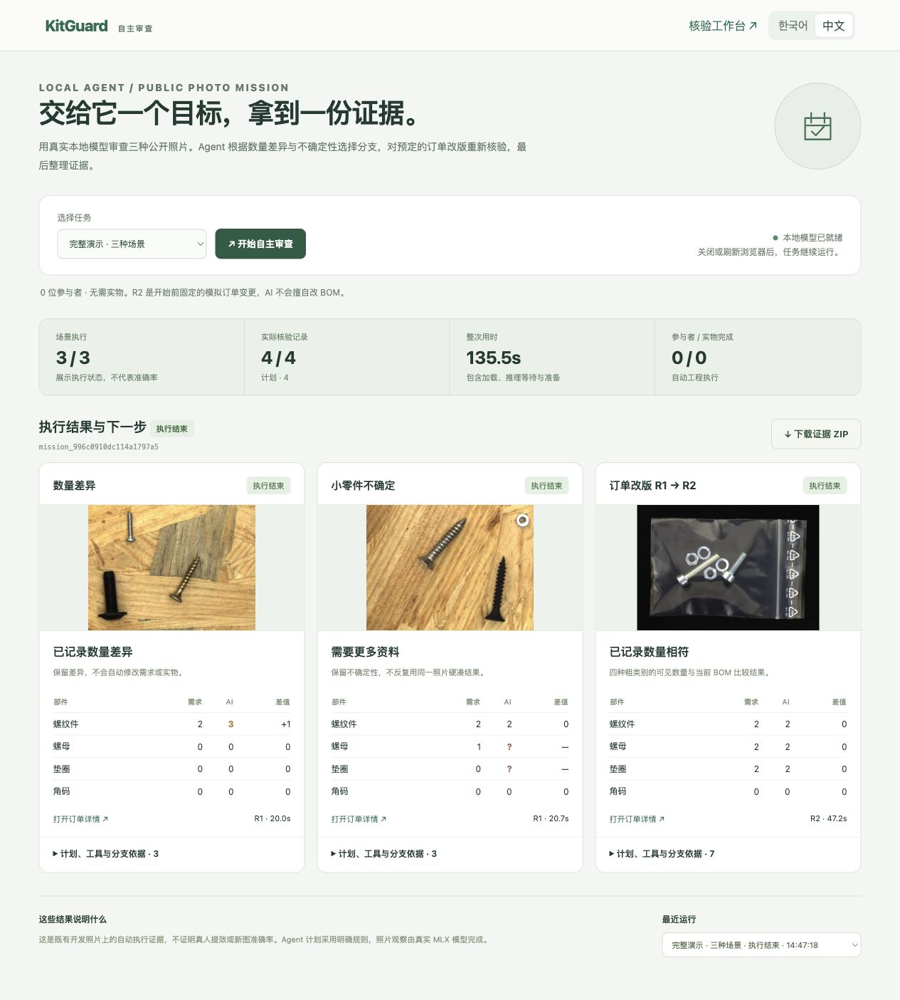

01 / QUANTITY
保留数量差异
需求 2 个螺纹件，实际观察 3 个。Agent 从保存的检查结果选择差异清单，不擅自改需求。
KITGUARD / v0.9.0.dev3 / 软件更新交付 · 2026.10.04
按你的要求继续开发：不找参与者、不购买实物、不申请外部 GPU。
新增自主审查台，让真实本地模型自动完成公开照片审查、条件分支、预定改版与证据整理。
01 / QUANTITY
需求 2 个螺纹件，实际观察 3 个。Agent 从保存的检查结果选择差异清单，不擅自改需求。
02 / UNCERTAINTY
小环状零件无法确认，螺母和垫圈保留“?”。执行结束并不表示判断正确，也不会反复用同图硬凑结果。
03 / REVISION
预定 R2 把旧检查变为历史，明确复用同一照片，再实际运行模型。R1 差异与 R2 数量相符都有记录。
规划器采用明确规则，视觉观察来自本地 MLX 模型。此次使用已曝光的公开开发照片；真人效果、现场收益、新图准确率没有新增结论。独立人工复核与意见没有由 Agent 自动代写。旧 51 图的 3 次错误仍然披露。

原始浏览器截图。现有 M5 Pro / 64GB，项目内 Qwen3.6-27B 4-bit。没有云推理或新购买硬件。
1,868 项回归通过。源码实解压启动检查通过，解压副本新增 24 项合同测试通过。刷新期间执行继续，服务重启后完整运行记录保持一致；已验证浏览器下载与证据散列。
真实运行证据 ZIP验收记录源码启动检查完整回归记录源码解压合同测试单人演示步骤新版发布说明来源与 AI 披露交付文件校验사진과 주문 수량이 따로 전달되면, 주문이 바뀐 뒤에도 과거 판단을 사용할 수 있습니다. KitGuard는 현재 주문과 사진에 연결되는 기계 검토 결과와 근거를 함께 보존하는 로컬 Agent입니다.
목표는 공개 사진의 현재 버전 수량을 검토하고 증거를 정리하는 것입니다. 명시적 규칙으로 계획을 세우고 실제 MLX 모델로 관찰합니다. 저장된 검사에 따라 차이 목록, 추가 자료 요청, 수량 일치 기록으로 분기합니다. 이 계획은 모델의 숨은 사고를 공개한 것이 아닙니다.
첫 과제에서 요구2와 관찰3의 차이를 기록했습니다. 두 번째의 작은 부품은 불확실하므로 자료 부족을 유지했습니다. 세 번째는 실행 전에 정한 모의 R2입니다. R1을 무효화하고 같은 사진을 명시적으로 재사용한 뒤 새로운 추론을 했습니다. 모델의 수량에 맞춰 주문을 임의로 고친 사례가 아닙니다.
실제 실행은3개 과제와4회 검사, 전체135.516초입니다. 1,868개 소프트웨어 회귀는 모델 정확도가 아닙니다. 실제 참여자0명, 실물 완료0건이며 사람의 시간 절감 효과는 측정하지 않았습니다. 기존 개발 사진으로 현재 버전의 실행과 증거 연결을 보여줍니다.
브라우저 새로고침에도 과제는 계속됩니다. 증거ZIP에는 원사진의 보관 사본, 주문과 검사 스냅샷, 도구·분기 기록과SHA256가 들어 있습니다. 이후 주문이나 모델 구성이 바뀌면 당시 결과가 역사 기록임을 표시합니다.
下列完整报告、技术说明、PPT、视频属于 dev1。这个目录是 dev3 软件与证据更新，并未重新制作五项材料。版本名称和原哈希均保留；正式提交前应按最终采用的软件版本同步材料。本次没有提交比赛。
查看 dev1 完整材料查看历史 dev2 补充本机现有环境：双击项目内“启动参赛演示.command”。新机器需按源码 README 准备依赖与本地模型；封包不包含权重或私人数据库。源码检查使用现有依赖，不能称为干净机器安装验证。